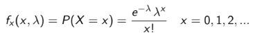

La inferencia estadística es el conjunto de métodos y técnicas
que permiten inducir, a partir de la información empírica proporcionada por una muestra,
cual es el comportamiento de una determinada población con un riesgo de error medible en términos de probabilidad.
Distribucion de probabilidad
Distribucion binomial
Es una distribución de probabilidad discreta; su función de
cuantí a o de masa de probabilidad está dada por:
Donde:
n: número de ensayos independientes
p y q: probabilidad de exitos y fracaso, p+q=1
x: número de exitos en n esayos
Distribucion poisson
La función de cuantía de probabilidad es:

X: número de éxitos por unidades de tiempo, espacio, area, etc
λ: número promedio de éxitos por unidades de tiempo,
espacio, área, etc.
Distribucion normal
La función de densidad de probabilidad de la distribución Nor-
mal es:
μ: es la media( mediana y moda)
σ: desviación estándar σ > 0
El proceso para estandarizar la distribución Normal
consiste en transformar la variable Normal N(μ, σ)
N(0, 1),es decir:
Distribucion de la media muestral
En estadística, la distribución muestral es lo que resulta de considerar todas las muestras posibles que pueden ser tomadas de una población. Su estudio permite calcular la probabilidad que se tiene, dada una sola muestra, de acercarse al parámetro de la población. Mediante la distribución muestral se puede estimar el error para un tamaño de muestra dado.
Si X1, X2, ..., Xn es unas muestra aleatoria de una población
infinita, con media µ y varianza σ
2 < ∞, entonces:
Demostracion:
Desigualdad de chebyshev
Sea X una variablea aleatoria, con media E(X) = µ y varianza
V(X) = σ*σ , entonces:
Proporcion muestral
es la forma decimal de un porcentaje, por lo que 100% sería una proporción de 1.000; 50% sería una proporción de 0.500, etc. La proporción de la población que vota por el Sr. Jones está simbolizada por el símbolo p . La proporción tiene la siguiente fórmula:
p = (número de resultados favorables) / (número de resultados en la población)
En esta segunda fórmula, el símbolo de la izquierda se llama p-hat y se usa para referirse a la proporción de una muestra de la población en contraposición a la proporción de la población total. Si bien las fórmulas se ven muy similares, la diferencia es muy importante. En muchas situaciones, realizar encuestas o muestrear a toda la población es difícil, demasiado caro o imposible.
Diferencia de proporciones y cociente de varianza
Distribucion muestral de la diferencia de proporciones
Dos poblaciones cuyos individuos pueden presentar (éxito) o no (fracaso)
una característica determinada
Dos muestras de tamaño n1 y n2
Proporciones muestrales pˆi
Ademas, por el teorema del limite central, si
n1>30, n2>30, n1.p1>5, n1,q1>5 n2.p2>5, n2.q2>5
¿Como se comporta la suma (o resta) de v.a. normales?
Varianza
Distribución muestral para el cociente de varianzas de poblaciones normales
Dadas dos muestras de tamaños n1 y n2, sabemos que
La distribución de probabilidad del miembro derecho se llama F de
Fisher-Snedecor con n1 − 1 y n2 − 1 grados de libertad: Fn1−1,n2−1
Uso del R
Un lenguaje para el análisis estadístico y gráfico
R es un ambiente de programación formado por un conjunto de herramientas muy flexibles que pueden ampliarse fácilmente mediante paquetes, librerías o definiendo nuestras propias funciones. Además es gratuito y de código abierto, un Open Source parte del proyecto GNU, como Linux o Mozilla Firefox.
¡Esta es una de sus principales ventajas!
Cualquier usuario puede descargar y crear su código de manera gratuita, sin restricciones de uso, la única regla es que la distribución siempre sea libre (GPL).
Gracias a que puede accederse libremente a su código, R software no tiene limitadas sus funciones, al contrario de lo que sucede con otras herramientas estadísticas comerciales como Statistica, SPSS, etc.
Lo que se puede hacer con R
Puedes: estudiar correlaciones, ajustar modelos, crear gráficos 3D de altísima calidad, aplicar árboles de decisión, realizar análisis clúster, análisis de componentes principales, crear redes neuronales de predicción, etc.
La lista de posibilidades es muy pero que muy extensa y se adapta a todo tipo de necesidades para el análisis complejo de datos.
La descarga e instalación de R es sencilla, a continuación se indican los pasos esenciales para una adecuada
instalación de R en Windows (para otros sistemas operativos es similar)